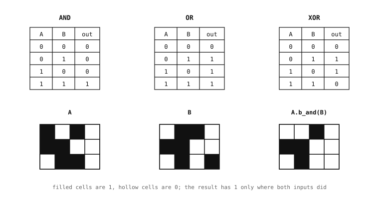

5.10. 按位运算¶
上一页中的算术运算作用于像素值 —— 整数亮度或打包的颜色字。按位运算则作用于更低一层，即这些值内部的各个比特位。对于每个像素只有一个比特位的二值图像，按位运算就是其天然的算术运算。
5.10.1. 按位运算系列¶
Image 类公开了完整的双输入按位运算集合：
b_and()—— 按位与（AND）。b_or()—— 按位或（OR）。b_xor()—— 按位异或（exclusive-OR）。b_nand()—— 与非（NOT-AND）。b_nor()—— 或非（NOT-OR）。b_xnor()—— 同或（NOT-XOR）。
每种运算都对两幅图像缓冲区中每个字节的每一位逐位操作。在二值图像上，每个字节存放八个像素，因此每处理一个字节就对八个像素执行运算。在灰度或彩色图像上，它对每个通道的每一位都进行运算。

上方：AND、OR 和 XOR 真值表 —— 每种运算的比特位级语义。下方：两幅二值图像 A 和 B，以及 A.b_and(B) 的结果，其中结果仅保留在两个输入中都为开（on）的位置。¶
5.10.2. 合并掩码¶
这些运算最常见的单一用途是合并掩码。掩码是一幅二值图像，它逐位置地表明某个条件是否满足。两个描述不同条件的掩码，可通过某种按位运算合并为单个描述复合条件的掩码：
b_and() 产生的掩码，仅在两个输入掩码于该位置都为开时该位置才为开 —— 即两个条件的天然“与”。通过 b_and 将前景掩码与一次阈值化处理的输出合并，可将阈值的匹配限制在前景内。
b_or() 产生的掩码，只要任一输入掩码为开则该位置即为开 —— 即天然的“或”。将两个阈值化输出做 OR 运算，可产生一个覆盖匹配两种颜色范围中任一者的单一掩码。
b_xor() 产生的掩码，仅在恰好一个输入掩码为开时该位置才为开。它对于检测两个掩码不一致的位置很有用 —— 例如阈值输出在两帧之间发生变化的位置、两个参考掩码之间的对称差，诸如此类。
取反的变体 —— b_nand()、b_nor()、b_xnor() —— 产生其非取反对应运算的补集。当描述某个条件的自然方式是“两者皆非”或“并非两者都”时，它们很有用 —— 虽不常见，但值得知道它们的存在，这样就不必通过在 AND 之后再跟一次单独的 invert() 来组合出取反结果。
5.10.3. 在非二值图像上的按位运算¶
按位运算也可在灰度和彩色图像上运行。当图像存放的是类二值内容时它们最为有用 —— 例如像素全为 0 或 255 的灰度帧、只有纯黑和纯白像素的 RGB565 帧 —— 此时 AND、OR 和 XOR 给出的组合与在真正的二值图像上相同。对于跨越完整取值范围的图像，上一页的算术运算通常更为合适。